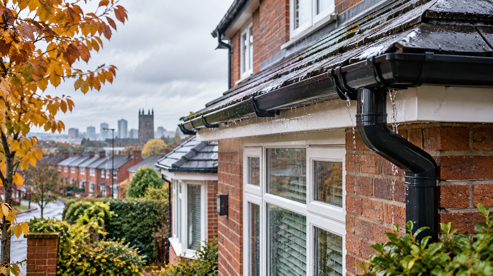
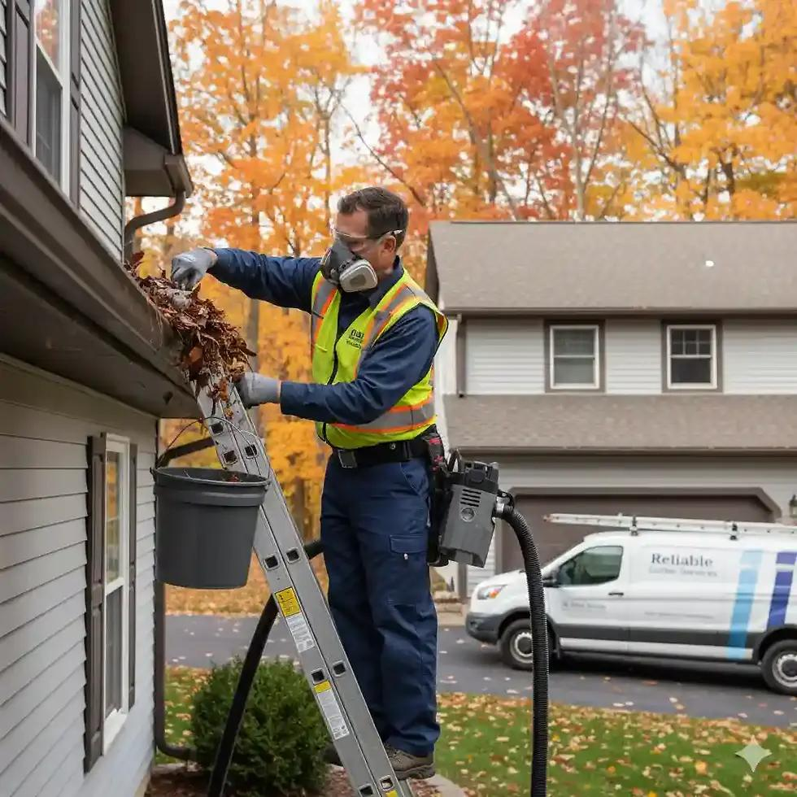

Manchester Gutter Cleaning
Manchester Gutter Cleaning Company provides 100% Satisfaction Guaranteed gutter cleaning for homes and businesses in the Manchester area. You can stop worrying about your gutters and get them cleaned by the top-rated gutter cleaners Manchester, residents have relied on for years.
When your gutters need to be cleaned you can trust our team to get the job done right. We use an online quoting and scheduling system and we provide secure online bill payment. Our goal is to provide our customers with the best Gutter Cleaning in Manchester that’s easy on your budget and your time.
Why Choose Manchester Gutter Cleaning?
Fast & Free Quotes
We Save You Money
Fully Insured Team
Worry-Free Service
If you are looking for gutter cleaning near Manchester, then you need to be looking for a professional company that provides you with the service you need and can stand behind their work once it is done. Manchester Gutter Cleaning is such a company. We absolutely guarantee that you will be satisfied with our work or we will make it right for up to 30 days!
Hiring a handyman service to clean your gutters is a popular thing these days. Hiring a handyman may appear to be cheaper, but like trying to clean your gutters yourself, hiring a handyman could end up costing you even more. That’s because when you hire a handyman you are taking on a lot of risks. Since they are not properly licensed and insured if they have an accident resulting in injury or property damage you are going to get stuck paying for it out of pocket.
On the other hand, Manchester Gutter Cleaning is properly licensing and carries 2 million dollars in liability insurance to go along with full workman’s compensation coverage. Few, if any handyman services have anything even close.
All this means is that we take all of the worry out of the gutter cleaning process for you. You don’t have to spend your whole weekend trying to do it and you don’t have to worry about anything unexpected. Manchester Gutter Cleaning has got you covered.
We’ve even got a handy guide you can read online called “Hiring A Gutter Cleaning Service” that you may also find helpful.

Gutter Cleaning Manchester
Gutter cleaning in Manchester is very important due to the fact that this is a region that gets significant rain, and it is also a region with a lot of trees, which means that there are a lot of leaves that can get into and clog your gutters. The rain gutters and downspouts that are installed in your home are there to help protect it from the damaging effects of rain.
Rain is unpredictable and if left without any type of direction the water from a storm could flow into places in your home that it could damage. This is why we have rain gutters, to direct the flow of that water so that it can be used in a beneficial way instead of having it cause harm. This is why it is so important that you have your gutters cleaned and inspected on a regular basis. Your gutters can’t do the job they are intended for if they are in bad condition or are clogged with muck and debris. Our recent article “Are Your Gutters Ready For Autumn” answers more questions about your gutters and rain (especially in Autumn) that is important to know.
While gutter cleaning in any region is important, gutter cleaning in Manchester is even more important due to the unique conditions of the area. The bottom line is that unless you want to end up with extensive damage to your home that requires expensive repairs, you need to make sure your gutters are cleaned on a regular basis. How can poorly maintained gutters damage your home? Well, when water is allowed to seep into your home it will cause structural damage as well as causing toxic black mould to grow and spread in your home. This type of damage will require the help of a professional to repair and clean, and that can lead to some pretty hefty bills. When you compare what these costs would be like to the cost of having a company come out and do gutter cleaning, it should be clear that gutter cleaning is well worth the money.
Failing to have your gutters cleaned and inspected on a regular basis will also likely lead to your gutters needing repairs, or even replaced. The rain gutters in your home were not designed to be weighed down by excessive amounts of debris. But that’s exactly what happens when you don’t have them cleaned out regularly. Over time small bits of debris accumulate in gutters, this debris turns into nasty and slimy muck if it is allowed to stay there and isn’t cleaned out. This extra weight places strain on the rain gutters, which can cause them to bend, warp, pull off of your home, or even collapse. Any of these issues is going to require having your gutters repaired or even replaced, which is a major expense. Once again, the cost of regular gutter cleaning should seem like a bargain when compared to the cost of expensive repairs or replacement of your rain gutters.
We recently updated “The Benefits of Gutter Cleaning” that goes into more detail about all of the reasons and benefits of having your gutters and downspouts professionally cleaned by Manchester Gutter Cleaning Co.
Our Manchester Gutter Cleaning Service Area
We literally work all over the metro area; you can check our locations page or on the map below for our typical service area.
Areas We Cover
Manchester
Gutter cleaning across Manchester and surrounding districts.
Salford
Professional gutter cleaning services in Salford.
Not sure if we cover your area? Get in touch and we'll let you know.
Check Your AreaOur Services
Gutter Repair
Fixing cracked, leaking, or sagging gutters to restore proper function and prevent damage.
Learn MoreGutter Guard Installation
Protective guards and filters to reduce debris buildup and extend time between cleans.
Learn MoreResidential Gutter Cleaning
Gentle, effective cleaning for all types of homes, from terraces to detached properties.
Learn MoreCommercial Gutter Cleaning
Specialised cleaning for offices, shops, and commercial buildings of all sizes.
Learn MoreIndustrial Gutter Cleaning
Heavy-duty gutter maintenance for warehouses, factories, and industrial units.
Learn MoreGutter Cleaning Near Me?
Of course we are near by, being located in Manchester, to most every community in the area. The best way to see if you have a technician available near you home or place of business is to get a quote.

Why Gutter Cleaning Is Important
The only job that your rain gutters and downspouts have is to keep rainwater flowing off of your roof in a controlled manner. Without them, water will flow everywhere and could cause quite a bit of damage. Rainwater isn’t just a threat to your home, left to its own devices it can damage your lawn and even the foundation of your home. When water pours off of your roof in an uncontrolled manner it can erode the soil in your yard. It can also form puddles that can actually harm the plants in your yard give them more water than they need. How can not having clean gutters affect your home’s foundation? It can because water can seep into the ground, then enter tiny cracks in the concrete that makes up your home’s foundation. When winter comes and temperatures drop below freezing, that water will turn to ice and can severely damage your foundation.
A rain gutter and downspout system that is clean and in good condition does a remarkable job at bringing order to chaos. Instead of having rainwater go every which way in an uncontrolled manner, rain gutters control it. In fact, if you have a well-designed rain gutter system you can even have it designed in a way that will allow you to use rainwater to help irrigate your yard. But no matter how well designed a rain gutter and downspout system is, if it is filthy and full of muck and debris it won’t be able to do what it was meant to do. The point here is that if you want to protect your home from water damage, you need to keep your gutters clean and your downspouts clear.

If you live in Manchester you are probably familiar with rain. In fact Manchester gets an average of 34 inches of rain per year. That’s almost 3 feet of rainfall per year. Now imagine all of that rain hitting your roof, flowing into your rain gutters, then spilling out everywhere because your gutters are not well maintained. That’s not a good scenario, and it’s one that will certainly end up causing damage to your home. Manchester is also well known for its abundance of trees and other foliage. Lots of trees mean lots of leaves. The combination of lots of leaves to clog up your rain gutters, along with an abundance of rain creates perfect conditions for gutter problems. That’s the bad news. The good news is that finding the right gutter cleaning company near Manchester can help you to avoid all of these issues.
Gutter Cleaning in Manchester
Once you realize that gutter cleaning in Manchester. needs to be done on a regular basis, you may think that doing the job yourself is going to be an easy way to save some money. If this is the assumption you have made, then you are going to be wrong for a number of reasons. First of all, this won’t be an easy way to save money at all. Cleaning out gutters is a very physically demanding job. You will have to climb up and down a ladder and move around a heavy bucket full of the disgusting things that you pull out of your gutter.
The second reason that cleaning your gutters yourself won’t help you save money is that it will likely end up costing you money. How can doing a job yourself cost you money? Well, when you are up on your ladder cleaning out your gutters you are going to be looking for any problems right? You probably will, but do you really have the knowledge and experience it is going to take to be able to spot those problems? Probably not. You know who has that type of knowledge and experience? A professional gutter cleaning company does. Manchester gutter cleaning requires the skills of an expert. This is a region that gets a lot of rain, so the last thing you want to do is end up having a problem with your rain gutters because you tried to save money by cleaning them yourself.
How Our Gutter Cleaning Works
A straightforward process from quote to clean-up — designed to be simple and convenient for you.
Request a Quote
Contact us for a free, no-obligation quote for your property.
Schedule Your Service
Pick a date and time that works for you. We'll confirm your booking.
Inspect & Clean
We inspect your gutters, clear all debris, and ensure water flows freely.
Check Downpipes
We check and clear downpipes to make sure the whole system works properly.
Clean Up
We tidy up all debris and leave your property as we found it.
How Frequently Should I Have My Gutters Cleaned In Manchester?
Manchester is a region that is known to be hard on rain gutters. There is a lot of foliage around, which means that there are a lot of leaves that can get into your gutters. There’s also a lot of wildlife that can cause you problems as well. Not many people think about how animals can cause problems in your gutters, but they can. What happens if a bird builds a next, or a squirrel makes his home in your gutters? That’s a clogged gutter that could be worse than a clog made from normal debris build up. Given the challenges involved in keeping your gutters cleaned in Manchester it’s common for people to try to figure out how often they should have their gutters cleaned?
So what’s the correct answer here? In a region like Manchester you are probably best off planning to have your gutters cleaned on average four times per year. That number may seem high, and it’s possible that it is. But what you have to realize is that it’s better to take an overly cautious approach and spend a little more money on gutter cleaning than it is to spend a lot of money on home repairs. Once you have an experienced and reputable gutter cleaning company come to your home and clean your gutters, they can then give you advice on how frequently they need to be cleaned. When they discuss this with you do yourself a favour and take their advice. They are professionals and know what they are talking about, and listening to their suggestions could end up saving you a lot of money in expensive home repairs.
Don’t Wait!
Many People Don’t Think About Their Gutters Until There Is A Problem
If you haven’t had your gutters cleaned in a while, and you haven’t even thought about them in even longer, then you aren’t alone. Your gutters aren’t designed to jump out at you and be noticed. Most of them are designed to be subtle while doing their all-important job of protecting your home from rainwater. So if you haven’t thought about your gutters in a while you aren’t alone. But, once you realize your mistake you need to do something about it.
Rain gutter cleaning in Manchester is extremely important, so if you realize it’s been a while since you have had your cleaned don’t delay any longer. You need to act today. What happens if tomorrow there is a big storm, and that ends up being the proverbial straw that breaks the Camel’s back? Then you’ve got a major problem on your hands. Once you do have a company come out and clean your gutters for you, one thing you can do to avoid forgetting about them again is to schedule your appointments out ahead of time. By doing this you don’t have to think about your gutters since you can largely automate the whole process.

Frequently Asked Questions
Common questions about our gutter cleaning services in Manchester.
Because houses vary so greatly, prices cover a wide range from £65 – £285. On the low end are smaller single-story houses, and on the high end are complex 2+ story houses with unwalkable roofs (i.e. too steep, slate, limited access, etc.). These types of roofs require extensive ladder work and more time.
No, our technicians don’t need access to the interior of your home to complete the gutter work. This means that it can be done while you’re at work – we simply leave the invoice in your door or mailbox.
Absolutely. We are fully insured to guarantee you peace of mind.
It depends. If you’re house is surrounded by trees and other plants – twice a year is needed. If however, your house is relatively shielded from nature entering into your gutters, once a year might do the trick.
In general, no we don’t recommend gutter protection. It’s usually a better use of your money to have periodic cleaning rather than installing expensive protection systems – payback can be well over ten years. That being said, if you have your heart set on a gutter system, we’re happy to recommend and install one for you.
Here are the steps of our gutter cleaning process:
Provide a detailed quotation and secure your order.
Provide a detailed quotation and secure your order.
Getting Started
If you are home on the day of the cleaning, knock on your door, show ID, and let you know that we’re getting started on your gutters.
Set Up Ladders & Clean Gutters
Set up ladders and clean all gutters.
Inspect Roof & Make Minor Repairs
Inspect roof and make minor repairs including recaulking flashing joints, securing loose shingles, and trimming back branches and vines that enter the gutter zone.
Clean Up
Clean up all job related debris and leaves that came from your gutters and roof.
Don't Wait Until Blocked Gutters Cause Problems
Regular gutter cleaning protects your property from water damage, damp, and costly repairs. Get your free quote today — no obligation, no pressure.
Request Your Free Quote
Fill in the form below and we'll get back to you with a free, no-obligation quote for your property.
Thank you! Your quote request has been received. We'll be in touch shortly.